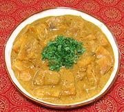

|
Fish Curry, MaharashtrianIndia - Maharashtra - Kaalvan | ||||
| Makes: Effort: Sched: DoAhead: |
4 w/rice *** 1-1/2 hrs Yes |
A flavorful curry made with many variations. I composed this recipe from 5 recipes, selecting for authenticity, but avoiding Maharastrian specialties not available in North America - see notes. | |||
|
1-1/2 ------- 2 1/4 1/2 1 ------- 3 1/2 5 ------- 1/2 1 1/2 1 1 1/2 1/2 ------ 1-1/2 14 1/4 |
# --- cl t T T --- T c oz --- t t t t t t t --- T oz c |
Fish Fillets (1) -- Marinade Garlic Turmeric Salt Lemon Juice -------------- Tamarind Block (2) Hot Water Onion -- Spice mix Cumin Seed Coriander Seed Turmeric Chili Flake (3) Paprika Garam Masala (4) Salt ---------- Oil Coconut Milk (5) Water |
Marinade - (12 min + 30+ min marinade)
|